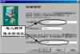
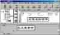
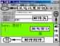
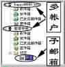

|
|
| 当前位置：电脑报电子版 > 1999 年 > 39 期 > 软件世界 > 飞狐传书——一步一步学Foxmail3.0 |
| 《 飞狐传书——一步一步学Foxmail3.0 》 |
FoxMail，中国人的电子飞狐 FoxMail是在因特网上收发E－Mail电子信件的工具软件，这个优秀的国产软件受到国内广大上网朋友的欢迎，被《电脑报》评为十大国产共享软件。FoxMail的英文版被国际著名的软件杂志ZDNet评为最高的五星级软件。FoxMail，是为我们传情达意的电子飞狐。日前，FoxMail推出了30的第二个测试版，这个最新版的电子飞狐，会更快更好地在因特网上为我们服务。下面，我们就来看看FoxMail 30的主要功能： ●快速地收发、解码邮件，支持多种邮件格式 ●极好的中文兼容性，支持GB、BIG5、HZ编码 ●邮箱过滤器自动分发邮件，远程邮件管理 ●强大的邮件编辑器，并具有模板和宏定义功能 ●支持多用户、多账户、多POP3收信 ●内置拨号网络管理，自动拨号上网和挂断 领养一只最漂亮的飞狐 1现在就让我们来“领养”一只最漂亮的电子飞狐FoxMail 30。飞狐身材娇小，下载文件的大小才595KB，可以到它的主页http:∥wwwaerofoxcom下载。贝贝提示：从网上下载的FoxMail 30测试版是一个ZIP格式的压缩文件，你可以使用WinZip、ZipMagic等解压缩软件将它解压到一个文件夹（目录）中。 2ZIP压缩包解压后，可以将FoxMail安装到某个磁盘。如果安装到D盘，则先在D盘上建立一个文件夹（目录），如D:\FoxMail（名称可以自定义）。然后将解压后的文件全部拷贝到新建的文件夹中。 贝贝建议：为了运行FoxMail的方便，建议建立FoxMail的桌面快捷方式。如果你是一个FoxMail 2X版本的用户，则安装就很简单了，只需将解压后的文件拷贝（覆盖）到老FoxMail所在的文件夹中即可。 训练我的飞狐，设置邮件账户 1．启动。使用鼠标点击桌面上建立的FoxMail快捷方式（或者安装目录中的FoxMail程序），第一次运行飞狐。贝贝提示：一定要建立好FoxMail所在的目录后，才开始运行程序，因为第一次运行FoxMail将要求指定你的邮件存放目录。 2．欢迎。第一次运行FoxMail将启动向导程序，帮助你建立个人的邮件账户（用户账户）。点击“下一步”按钮（以下各步骤类同）。 贝贝解释：所谓的用户账户，就是在FoxMail中设置收发电子邮件的技术参数如电子邮箱的服务器地址、邮箱名称、回信签名信息等。 3输入用户名称。建议你输入一个有意义的名称，如你的外号（“贝贝”）或者使用的目的（“爱情专线”）等。 4设置邮箱路径。设置邮箱路径就是设置FoxMail将收到的信储存在硬盘什么地方（称为路径或目录）。一般选择默认路径，即安装FoxMail所在的路径。 贝贝提示：如果要将邮件存储在自己认为适合的位置，可以点击“选择”按钮，在弹出的目录树窗口中选择某个目录即可。 5设置用户的个人信息。个人信息，就如同写信用的地址、姓名落款。按照窗口中的提示输入你的签名（发送信件者姓名），你的电子邮箱地址。 贝贝提示：输入的邮箱地址一般是你经常用来收信的电子信箱地址，如loveme@21cncom之类的。注意，个人电子信箱是需要申请的。 6指定邮件服务器（图1）。例如我们有一个免费邮箱loveme@21cncom，就设置收信的POP3服务器地址为21cncom。在“POP3账户名”文本框中输入你的电子邮箱账户名称，如loveme就是上例的电子邮箱账户名称。 贝贝解释：邮件服务器是因特网上进行邮件分捡、收发的计算机。如果说FoxMail是信使，则邮件服务器就是邮局，我们必须告诉信使飞狐到哪个邮局去取信，取谁的信，邮件服务器地址一般有两种形式，解析地址（如163com、21cncom之类，但最终要“翻译”为数字地址）和数字地址（如213344578之类）。邮件服务器又分为SMTP服务器和POP3服务器，SMTP服务器是用来发送信件的邮件服务器，而POP3服务器是指接收邮件的服务器。很多情况下POP3服务器和SMTP服务器是同一个服务器（即两个服务器的地址相同）。关于你的电子信箱邮件服务器的地址，应仔细查看电子信箱服务说明。 在“SMTP服务器”文本框中输入SMTP服务器地址。例如SMTP21cncom。在“POP3服务器”文本框中输入POP3服务器地址。例如POP21cncom。最后，点击“完成”结束。 飞狐初试身手，收发第一封邮件 1启动FoxMail（图2）。在上面的设置完成后，FoxMail的窗口就启动了，在窗口的左上角，可以看到我们建立的“爱情专线”账户，点击“爱情专线”旁的“＋”号，即列出了该账户下内建的各种功能邮箱（用来存储不同类别的邮件）。贝贝提示：如果最小化界面窗口，则程序将缩小成为任务条状态栏中的图标。点击图标即可复原界面窗口。 2．查看用户账户。点击菜单项“账户”，在弹出的账户菜单中选择最下面的“属性”项，弹出账户属性设置窗口，选择窗口中的“邮件服务器”标签选项，可以检查和修改刚才设置的邮件服务器的地址，最后填入访问信箱的口令（也可以在连接收信的时候输入口令），邮件服务器就基本设置好了。 贝贝提示：请一定要查实你使用的电子信箱的服务器地址的正确性。建议使用数字格式的地址，这样连接速度可能要快些。 3设置网络。选择菜单“选项/系统设置”，在弹出的设置窗口中选择“网络”标签，如果你是通过局域网上网，就选择标签中的“局域网（LAN）或专线上网”。对于拨号上网的，可以选择“手工”（即手工拨号，手工断线，FoxMail不参与），也可选择方便的“自动拨号上网”。 4开始收取第一封邮件。点击界面工具条上的第二个工具按钮，即可开始收取电子邮箱服务器上的信件。 贝贝提示：FoxMail在收取信件时，会有一个小的状态窗口，该窗口会显示收信过程中的每一步过程，包括网络连接、登录、读取邮箱信息，以及收取每一封信的进度，收取完成后，还将显示收取到的信件数量、保存到的信箱等信息。 5撰写邮件（图3）。鼠标点击工具栏的第三个图标——“撰写”按钮，程序弹出写邮件编辑窗口，窗口的上部文本框供你填写邮件的地址信息等，下部是文本编辑窗口。 6信件的地址与主题。首先，在窗口上部的收件人框中输入收件人的邮箱地址，如自己给自己发电子邮件就可写loveme@21cncom。收件人可以有多个，输入时用逗号隔开。也可以在“抄送”栏中填写其他的收件人。 贝贝提示：请仔细填写主题栏，像“第一封求爱信”这样的主题是会吸引收信人注意的。另外，在FoxMail中建立一个地址簿（菜单“工具/地址簿”），可以让你轻松发送大量的邮件。 7编辑操作。现在就可以撰写信件的具体内容了。FoxMail提供了一个较好的撰写模板（可以自设定），能自动为你添加信头、落款等。要简单地设置信件的字体和背景颜色，可以选择菜单“选项/编辑器属性”设置。 8添加附件。电子邮件在发送时可以携带的独立文件（如文本文件、图像文件、程序等），称为附件。添加附件的方法是先准备好附件文件，再在邮件撰写窗口中选择工具栏倒数第二个图标（回形针图标），在弹出的文件选择窗口中选择要发送的附件文件。如果有多个，就要多次选择。发信时，FoxMail会自动将这些附件文件传送出去。 9．发送邮件。发送邮件很简单，点击撰写窗口的工具条上第一个图标，即可马上将撰写的信发送出去。点击工具栏第三个图标，则是将撰写的邮件保存为草稿（保存在发件箱，可以从邮件图标上识别），等以后再编辑。对于大多数拨号上网的用户来讲，一般都是离线撰写邮件，然后再上网发送信件，这时就需要选择工具条第二个图标，将邮件保存到发件箱，当上网的时候，再在FoxMail的主界面选择“发送”（工具栏第一个按钮），发件箱中的候发信件将会被一一发送出去。 贝贝提示：如果是要撰写回信或者转发邮件。先在收件箱或某个邮箱中选择要回复的邮件，点击工具栏中的第4个图标，弹出回复信件的撰写窗口。其他使用操作与上述的撰写邮件相同。如果是转发信件（点击工具栏第5个图标按钮），则是将信件原样地另寄给他人，你只需添上转发地址就可以了。 成长的飞狐，邮件的阅读和管理 1．阅读邮件。FoxMail将收到的信都存放在收件箱中，打开收件箱，则在右面的窗口中显示了收件箱里的邮件列表，每封邮件都列出了信件的邮件头信息，要阅读某封信件，直接用鼠标单击，就可在下面的阅览窗口中阅读（如果双击某封信件，则打开专门的阅览窗口来阅读信件）。如用鼠标点击“日期”项目栏，则邮件就按日期进行升序排列，也可以点击其它项目来排序。如果邮件的列表窗口中的类型图标旁带有一个回形针的标志，则表明该邮件带有附件，有附件的邮件阅读窗口中将显现附件图标，双击某个附件文件，可以在弹出的对话框中对附件进行打开或另存。 贝贝提示：在FoxMail中，可以对邮件的处理情况进行标记。一种是标记邮件“已读”或“未读”（发件人名称后面绿色圆点表示信件未读）。一种是标记信件是否回复（蓝色的弧形箭头），另外还可以在使用菜单项“邮件/标记状态为”来对信件进行标记。 2建立新的子邮箱（图4）。FoxMail 30可以像建立目录树一样建立多级子邮箱，这样可以分门别类保存来信。如要建立一个根邮箱，选择账户，再选择菜单“邮箱/建新邮箱”，在程序界面左上的邮箱列表窗口中，就出现了写有“新邮箱1”字样的邮箱，这时输入邮箱的名称，邮箱就建立好了。 贝贝提示：如果要建立一个子邮箱，则先选择一个根邮箱，然后再按上述方法建立一个新的子邮箱。 3建立多个账户（图4）。如果一台电脑中的FoxMail程序有好几个使用者，或者你要使用好几个电子信箱发收信件，这时你就要建立多个账户了。选择菜单“账户/新建”，程序将调用向导程序来帮助你建立一个新的账户，具体过程可以参见前面内容。设置完成后，就可以看到一个新的账户，该账户同样包含了各种功能邮箱，可以单独地收发信件。 贝贝提示：还可以设置一个账户收取多个邮箱的信件（在账户属性窗口中设置）。另外，为了实现程序真正的多人共用，还必须提供对用户邮件的保护，FoxMail提供了对账户和自建子邮箱的两级口令保护（选择菜单“账户/访问口令”）。 4．远程邮箱管理。使用远程信箱管理工具可以预先了解一下信箱中有什么样的邮件，并处理一番，或查看或删除或收取，做到有的放矢。选择菜单“工具/远程邮箱管理”，然后在弹出的窗口中点击“取服务器信息”，程序将访问邮件服务器，列出你信箱中所有的邮件，这时你就可以对这些邮件进行操作了（选择窗口上部或下部的命令即可）。 5．祝你的飞狐一路顺风。小巧的飞狐，还集中了其他许多方便实用的功能，如增强的自动拨号功能、URL地址自动变色功能、对象的拖放功能、全面的右键菜单功能、文件的右键菜单的发送命令启动FoxMail、转发邮件时自动包含附件、发送BIG5码邮件等，经过逐步地试用和体会，你的飞狐将会越来越快地为你传书递信。 (特约撰稿人 白正) |
| 下载本期推荐软件 | 页 首 |
| 《电脑报》版权所有，电脑报网站编辑部设计制作发布 |
{kind=link}